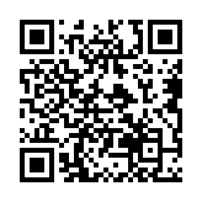

Paket
Jadwal
Galeri
Testimoni
Kontak
Beranda
Visa & Siskopatuh
Hotel/Apartemen
Galeri Kurma
Selamat Datang di
Komunitas Umrah Mandiri ADEM
(KURMA)
Semoga Umrahmu menjadi Aman, Damai, Efisien, dan Mabrur
Pendahuluan
Pola Umrah Mandiri ADEM
Visa Umrah dan Siskopatuh
Hotel/Apartemen
Transportasi di Arab Saudi
🍔 Kuliner Indo/Arab
Checklist Perlengkapan Umroh
Galeri KURMA
☕ Dukung Karya Saya (QRIS / Donasi)
